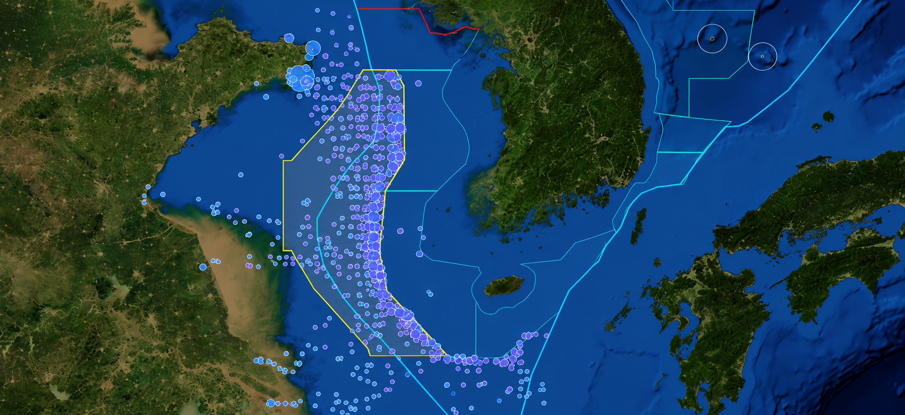

허가선박분석
29:54
어현상 (경위)
시스템 관리자 · ID/PW
허가선박분석
허가어선 상세정보 · 입출역 보고 · 어획보고 기반 — 어업별 · 지역별 · 운반선 · 제원 · 허가 추이 · 이력
2026년 허가 1,077척
기준 2026-09-26
업종 구성
월별 입역 보고 (업종별)
업종별 제원 · 할당량
| 업종 | 척수 | 평균 톤수 | 평균 마력 | 평균 길이(m) | 평균 승선원 | 평균 냉장용량 | 할당량 합계(t) | 주요 선적항 | 조업수역 | 입출역 보고 |
|---|---|---|---|---|---|---|---|---|---|---|
| PT · 2척식저인망(본선) | 348 | 156.8 | 351 | 33.1 | 11.3 | 171.3 | 34,800 | 石島 176 · 漁島 64 · 象山 30 | II,III 340 · II,III,IV 8 | 4,697 |
| PT-S · 2척식저인망(부속선) | 348 | 156.9 | 351 | 33.1 | 11.3 | 171.6 | 0 | 石島 176 · 漁島 64 · 象山 30 | II,III 340 · II,III,IV 8 | 4,696 |
| GN · 유망 | 309 | 140.4 | 239 | 31.7 | 12.3 | 187.8 | 8,679 | 莒口 97 · 大连 47 · 北塘 40 | II,III,IV 200 · II,III,IV 109 | 1,456 |
| FC · 운반선 | 43 | 206.8 | 402 | 35.3 | 12 | 279 | 0 | 莒口 12 · 大连 12 · 漁島 8 | I,II,III,IV 31 · II,III,IV 12 | 116 |
| PS · 위망 | 16 | 258.3 | 664 | 35.8 | 14.5 | 115.1 | 6,000 | 宁波 16 | I,II,III,IV 16 | 50 |
| OT · 1척식저인망 | 13 | 214.1 | 535 | 40.6 | 9 | 199.5 | 542 | 漁島 12 · 象山 1 | II,III 13 | 217 |
평균값 칸에 마우스를 올리면 원격 기초인지 보입니다. 부속선(PT-S)은 본선 할당량 합계에 포함되므로 할당량이 0입니다.
입출역 보고 해구 버블 — 전체

북방한계선(NLL)
가상중간선(EEZ)
영해선
한중잠정조치수역
특정어업수역
입역 우세